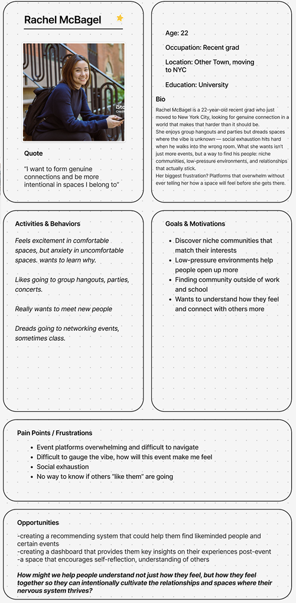
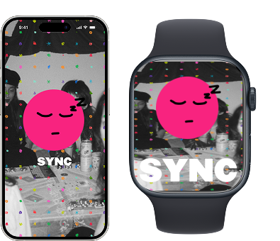
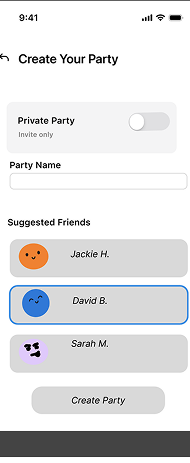
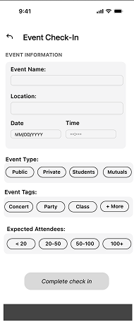
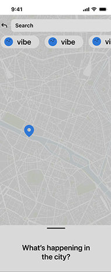
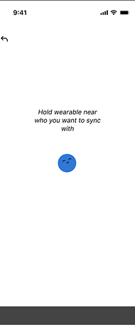
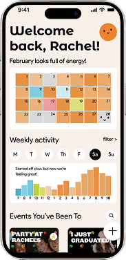
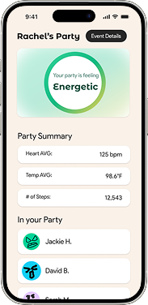
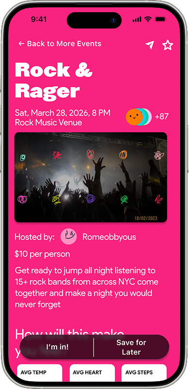
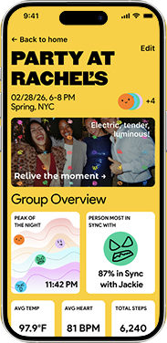

SYNC
An app and Apple Watch wearable that helps Gen-Z track and visualize collective effervescence — the electric feeling of being fully in sync with the people and spaces around you.
The Challenge
For FigBuild 2026, Figma's annual global design hackathon, our team was given a speculative design prompt:
We had 3 days to brainstorm, research, iterate, and prototype our solution from scratch.
Understanding the Problem
We kept coming back to a feeling most people recognize but can't explain — that electric buzz when you're at a concert, dinner, or party and everything just clicks.
Sociologist Émile Durkheim called it collective effervescence: the heightened sense of energy and connection that emerges when a group is fully present together.
Gen-Z is one of the most digitally connected generations in history — yet also one of the loneliest.
Day 1 — Research & Persona
We interviewed Gen-Z participants to understand moments when they felt most energized around others. Their answers shaped a clear picture of who we were designing for.
Meet Rachel

SYNC is a Two-Part Product
A purely digital solution felt incomplete for something as physical and social as collective feeling.
The SYNC Watch
An Apple Watch experience that passively detects sync moments through biometric signals.
The SYNC App
A personal sync journal helping users visualize their most energizing relationships and spaces.

Day 2 — Wireframes
We explored low-fidelity flows around check-ins, wearable prompts, and weekly recaps.




Day 3 — High Fidelity Prototype
Using Figma Make, we created a prototype focused on energetic visuals and emotionally-driven interactions.
Design Goals
Awareness
Help users recognize moments of collective energy.
Insight
Surface patterns across relationships and spaces.
Privacy
Give users control over biometric and social data.




Edge Cases
- Biometric spikes may come from anxiety, not social joy.
- Social comparison features could create pressure.
- Users should reflect on experiences, not chase scores.
Reflections
This project taught me how to design for emotion, not just functionality.
Working under a 3-day timeline pushed our team to make fast, intentional product decisions while keeping the experience grounded in real human connection.